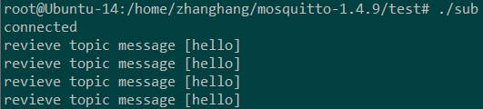

之前做mqtt一直用的paho库编程，但是要开启broker服务，又必须有mosquitto库的支持，要移植的时候，也要移植两个库的相应动态库，编译和移植两个库总比一个库要复杂，mosquitto库是提供了mqtt编程接口的，虽然接口和paho是完全不一样，但是其底层实现是一样的(socket）。接下来谈谈mosquitto库编程实现mqtt通信。
先说一个问题吧：当报错有/usr/bin/ld: skipping incompatible...时，看看编译器和动态库版本是否一样，之前编译一个文件，死活报这个错，结果编译器是x86的，而链接动态库是arm的...
查看源码，现在mosquitto目录下建立索引，这个库的索引比较小。
ctags -R
在vim配置文件（/etc/vim/vimrc或~/.vimrc下）添加set tags=“tags所在绝对路径”
在client目录下，有两个文件pub_client.c和sub_client.c分别是mosquitto_pub和mosquitto_sub的实现。
在src目录下，函数mosquitto.c是对mosquitto工具的实现。
看到mosquitto/test目录，库为我们提供了两个简单的测试程序，我们分析msgsps_pub.c和msgsps_sub.c文件。
/* This provides a crude manner of testing the performance of a broker in messages/s. */
#include <stdbool.h>
#include <stdint.h>
#include <stdio.h>
#include <stdlib.h>
#include <sys/time.h>
#include <mosquitto.h>
#include <msgsps_common.h>
static bool run = true;
static int message_count = 0;
static struct timeval start, stop;
/*#define MESSAGE_SIZE 1024L*/
/*#define MESSAGE_COUNT 100000L*/
void my_connect_callback(struct mosquitto *mosq, void *obj, int rc)//回调函数
{
printf("rc: %d\n", rc);
gettimeofday(&start, NULL);
}
void my_disconnect_callback(struct mosquitto *mosq, void *obj, int result)//回调函数
{
run = false;
}
void my_publish_callback(struct mosquitto *mosq, void *obj, int mid)
{
message_count++;
//printf("%d ", message_count);
if(message_count == MESSAGE_COUNT){
gettimeofday(&stop, NULL);
mosquitto_disconnect((struct mosquitto *)obj);
}
}/*函数每调用一次，message_count加1，最大为100000L,后断开连接*/
int create_data(void)
{
int i;
FILE *fptr, *rnd;
int rc = 0;
char buf[MESSAGE_SIZE];
fptr = fopen("msgsps_pub.dat", "rb");//在当前目录只读打开文件（二进制打开）
if(fptr){
fseek(fptr, 0, SEEK_END);//定位光标到文件尾
if(ftell(fptr) >= MESSAGE_SIZE*MESSAGE_COUNT){
fclose(fptr);
return 0;
}//文件过大关闭返回
fclose(fptr);//关闭文件指针
}
fptr = fopen("msgsps_pub.dat", "wb");//再次以只写方式二进制打开文件，并将文件数据截为0
if(!fptr) return 1;
rnd = fopen("/dev/urandom", "rb");///dev/random和/dev/urandom是Linux系统中提供的随机伪设备，这两个设备的任务，是提供永不为空的随机字节数据流。很多解密程序与安全应用程序（如SSH Keys,SSL Keys等）需要它们提供的随机数据流。
if(!rnd){
fclose(fptr);
return 1;
}
for(i=0; i<MESSAGE_COUNT; i++){
if(fread(buf, sizeof(char), MESSAGE_SIZE, rnd) != MESSAGE_SIZE){
rc = 1;
break;
}
if(fwrite(buf, sizeof(char), MESSAGE_SIZE, fptr) != MESSAGE_SIZE){
rc = 1;
break;
}
}
fclose(rnd);
fclose(fptr);
补一下fread和fwrite的功课吧：
size_t fwrite(const void * restrict ptr,size_t size,size_t nmemb,FILE* restrict fp);
fwrite(buffer,256,1,fp);
将256字节数据从buffer写入文件fp;
size_t fread(const void * restrict ptr,size_t size,size_t nmemb,FILE* restrict fp);
fread(buffer,256,1,fp);
从fp中取出256字节数据放入buffer中
都为二进制
return rc;
}
这个函数简单来说就是从/dev/urandom以二进制形式取出100000字节数据放到文件msgsps_pub.dat中成功并返回rc=1。
int main(int argc, char *argv[])
{
struct mosquitto *mosq;
int i;
double dstart, dstop, diff;
FILE *fptr;
uint8_t *buf;
buf = malloc(MESSAGE_SIZE*MESSAGE_COUNT);
if(!buf){
printf("Error: Out of memory.\n");
return 1;
}
start.tv_sec = 0;
start.tv_usec = 0;
stop.tv_sec = 0;
stop.tv_usec = 0;
if(create_data()){
printf("Error: Unable to create random input data.\n");
return 1;
}
fptr = fopen("msgsps_pub.dat", "rb");
if(!fptr){
printf("Error: Unable to open random input data.\n");
return 1;
}
fread(buf, sizeof(uint8_t), MESSAGE_SIZE*MESSAGE_COUNT, fptr);
fclose(fptr);
//create_data函数生成100000字节数据到文件msgsps_pub.dat中，再将这些数据写道buf中
mosquitto_lib_init();//初始化
mosq = mosquitto_new("perftest", true, NULL);//为指针分配空间，并设置某些成员
mosquitto_connect_callback_set(mosq, my_connect_callback);
mosquitto_disconnect_callback_set(mosq, my_disconnect_callback);
mosquitto_publish_callback_set(mosq, my_publish_callback);
//为结构mosquitto中对应函数指针赋值
mosquitto_connect(mosq, "127.0.0.1", 1883, 600);//创建连接，ip为127.0.0.1，端口1883，存活时间600秒
i=0;
while(!mosquitto_loop(mosq, 1, 10) && run){//mosquitto_loop()函数正常执行会返回0
if(i<MESSAGE_COUNT){
mosquitto_publish(mosq, NULL, "perf/test", MESSAGE_SIZE, &buf[i*MESSAGE_SIZE], 0, false);
i++;
}
}
dstart = (double)start.tv_sec*1.0e6 + (double)start.tv_usec;
dstop = (double)stop.tv_sec*1.0e6 + (double)stop.tv_usec;
diff = (dstop-dstart)/1.0e6;
printf("Start: %g\nStop: %g\nDiff: %g\nMessages/s: %g\n", dstart, dstop, diff, (double)MESSAGE_COUNT/diff);
mosquitto_destroy(mosq);
mosquitto_lib_cleanup();
//释放资源
return 0;
}
//程序将从/dev/urandom获取100000字节数据，并将这些数据按字节发送出去
函数mosquitto_connect和函数mosquitto_disconnec由函数mosquitto_loop调用
函数mosquitto_publish会调用函数my_publish_callback函数
结构体mosquito:
struct mosquitto {
...
char *address;
char *id;
char *username;
char *password;
uint16_t keepalive;
uint16_t last_mid;
enum mosquitto_client_state state;
...
#if defined(WITH_THREADING) && !defined(WITH_BROKER)
pthread_mutex_t callback_mutex;
...
#endif
...
void (*on_connect)(struct mosquitto *, void *userdata, int rc);
void (*on_disconnect)(struct mosquitto *, void *userdata, int rc);
void (*on_publish)(struct mosquitto *, void *userdata, int mid);
void (*on_message)(struct mosquitto *, void *userdata, const struct mosquitto_message *message);
void (*on_subscribe)(struct mosquitto *, void *userdata, int mid,int qos_count, const int *granted_qos);
void (*on_unsubscribe)(struct mosquitto *, void *userdata, int mid);
void (*on_log)(struct mosquitto *, void *userdata, int level, const char *str);
//void (*on_error)();
char *host;
int port;
...
};
函数mosquitto_publish：
函数原型：int mosquitto_publish(struct mosquitto *mosq, int *mid, const char *t
opic, int payloadlen, const void *payload, int qos, bool retain)
根据参数qos值，会有两条执行路径，0或非0。
函数调用过程比较复杂，调用成功返回0，函数发送主题为topic，长度为payloadlen的消息payload，服务质量为qos，retain表示保留信息有无。
接下来是文件msgsps_sub.c
/* This provides a crude manner of testing the performance of a broker in messages/s. */
#include <stdbool.h>
#include <stdint.h>
#include <stdio.h>
#include <sys/time.h>
#include <unistd.h>
#include <mosquitto.h>
#include <msgsps_common.h>
static bool run = true;
static int message_count = 0;
static struct timeval start, stop;
FILE *fptr = NULL;
void my_connect_callback(struct mosquitto *mosq, void *obj, int rc)
{
printf("rc: %d\n", rc);
}
void my_disconnect_callback(struct mosquitto *mosq, void *obj, int result)
{
run = false;
}
void my_message_callback(struct mosquitto *mosq, void *obj, const struct mosquitto_message *msg)
{
if(message_count == 0){
gettimeofday(&start, NULL);
}
fwrite(msg->payload, sizeof(uint8_t), msg->payloadlen, fptr);
message_count++;
if(message_count == MESSAGE_COUNT){
gettimeofday(&stop, NULL);
mosquitto_disconnect((struct mosquitto *)obj);
}
}
int main(int argc, char *argv[])
{
struct mosquitto *mosq;
double dstart, dstop, diff;
int mid = 0;
char id[50];
int rc;
start.tv_sec = 0;
start.tv_usec = 0;
stop.tv_sec = 0;
stop.tv_usec = 0;
fptr = fopen("msgsps_sub.dat", "wb");
if(!fptr){
printf("Error: Unable to write to msgsps_sub.dat.\n");
return 1;
}
mosquitto_lib_init();
snprintf(id, 50, "msgps_sub_%d", getpid());
mosq = mosquitto_new(id, true, NULL);
mosquitto_connect_callback_set(mosq, my_connect_callback);
mosquitto_disconnect_callback_set(mosq, my_disconnect_callback);
mosquitto_message_callback_set(mosq, my_message_callback);
mosquitto_connect(mosq, "127.0.0.1", 1883, 600);
mosquitto_subscribe(mosq, &mid, "perf/test", 0);
do{
rc = mosquitto_loop(mosq, 1, 10);
}while(rc == MOSQ_ERR_SUCCESS && run);
dstart = (double)start.tv_sec*1.0e6 + (double)start.tv_usec;
dstop = (double)stop.tv_sec*1.0e6 + (double)stop.tv_usec;
diff = (dstop-dstart)/1.0e6;
printf("Start: %g\nStop: %g\nDiff: %g\nMessages/s: %g\n", dstart, dstop, diff, (double)MESSAGE_COUNT/diff);
mosquitto_destroy(mosq);
mosquitto_lib_cleanup();
fclose(fptr);
return 0;
}
函数int mosquitto_subscribe(struct mosquitto *mosq, int *mid, const char *sub, int qos)；
sub表示订阅的主题。
订阅主题后，函数mosquitto_loop检测到消息，就会调用函数my_message_callback来对获取的消息进行操作。
mosquitto_loop会在循环开始时调用my_connect_callback函数，在循环中收到消息调用my_message_callback，在结束时调用函数my_disconnect_callback
最后，此函数将收到的消息以二进制形式写入到文件中。
库函数编程实现MQTT通信示例，使用本地环回测试测试：
开启broker：
zhanghang@Ubuntu-14:~$ mosquitto
执行命令后，主机的1883号端口会开启。
客户端程序(publish)
#include <stdbool.h>
#include <stdint.h>
#include <stdio.h>
#include <sys/time.h>
#include <unistd.h>
#include <mosquitto.h>
#include <string.h>
#include <stdlib.h>
#include <msgsps_common.h>
#define MAXSIZE 1024
#define HOST "localhost"
#define PORT 1883
#define KEEPALIVE 60
#define TOPIC "temp"
//此函数会在mosquitto_loop_start函数后执行
void my_connect_callback(struct mosquitto *mosq, void *obj, int rc)
{
printf("connected\n");
}
//此函数会在loop结束时执行，此处并不会用到
void my_disconnect_callback(struct mosquitto *mosq, void *obj, int result)
{
printf("disconnect\n");
}
int main(void)
{
struct mosquitto *mosq;
int loop=0;
char buf_s[]={"hello"};
mosquitto_lib_init();
mosq = mosquitto_new(NULL, true, NULL);
mosquitto_connect_callback_set(mosq,my_connect_callback);
mosquitto_disconnect_callback_set(mosq,my_disconnect_callback);
mosquitto_connect(mosq,HOST,PORT,KEEPALIVE);
loop=mosquitto_loop_start(mosq);//use connect callback and disconnect callback
if(loop!=MOSQ_ERR_SUCCESS)
{
printf("mosquitto_loop_start failure\n");
return -1;
}
sleep(1);
while(1)
{
int i=mosquitto_publish(mosq,NULL,TOPIC,strlen(buf_s)+1,&buf_s,0,0);
if(i!=0)
{
printf("mosquitto_publish failure\n");
return -1;
}
printf("topic [%s] message [%s] publish successfully\n",TOPIC,buf_s);
sleep(3);
}
//循环发布消息，每次检测是否发布成功，如果成功则打印成功信息，否则退出
mosquitto_destroy(mosq);
mosquitto_lib_cleanup();//释放资源
return 0;
}
客户端程序(subscribe)
#include <stdbool.h>
#include <stdint.h>
#include <stdio.h>
#include <sys/time.h>
#include <unistd.h>
#include <mosquitto.h>
#include <msgsps_common.h>
#define HOST "localhost"
#define PORT 1883
#define KEEPALIVE 60
#define TOPIC "temp"
void my_connect_callback(struct mosquitto *mosq, void *userdata, int result)
{
printf("connected\n");
/* if(!result)
{
mosquitto_subscribe(mosq,NULL,TOPIC,0);
}*/
}
//由于my_connect_callback函数会首先调用，，可以在此函数中执行订阅工作，也可以在loop_forever之前调用subscribe函数
void my_disconnect_callback(struct mosquitto *mosq, void *userdata, int result)
{
printf("disconnected\n");
}
//此处不会用到
void my_message_callback(struct mosquitto *mosq, void *userdata, const struct mosquitto_message *message)
{
if(message->payloadlen)
{
printf("revieve topic message [%s]\n",(char *)message->payload);
}
}
//如果收到消息，则打印消息
int main()
{
struct mosquitto *mosq;
mosquitto_lib_init();
mosq = mosquitto_new(NULL, true, NULL);
mosquitto_connect_callback_set(mosq,my_connect_callback);
mosquitto_disconnect_callback_set(mosq,my_disconnect_callback);
mosquitto_message_callback_set(mosq,my_message_callback);
if(mosquitto_connect(mosq,HOST,PORT,KEEPALIVE))
{
printf("mosquitto_connect failure\n");
return -1;
}
mosquitto_subscribe(mosq,NULL,TOPIC,0);
mosquitto_loop_forever(mosq,-1,1);//此函数首先会调用my_connect_callback函数，之后循环检测是否收到消息，如果收到则调用my_message_callbcak函数
mosquitto_destroy(mosq);
mosquitto_lib_cleanup();//释放资源
return 0;
}
运行结果如下：

通常情况下，broker和publish，subscribe会运行在三个各不相同的主机上，broker通常运行在服务器上，服务器有全球ip，可被私有ip访问，如果服务器在NAT路由器下，例NAT路由器的全球域名为a.b.c，服务器ip为192.168.0.168，在NAT路由器下端口映射为a.b.c：4444->192.168.0.168：22,在服务器下搭建mqtt环境，需在NAT路由器下设置第二个端口映射：a.b.c:xxx->192.168.0.168:1883。接下来我们可以将订阅和发布都指向此broker,这样只要是发布到此broker的消息，订阅端订阅相应话题,即可收到消息。此外，publish和subscribe程序都要将ip和端口设置为a.b.c:xxx。